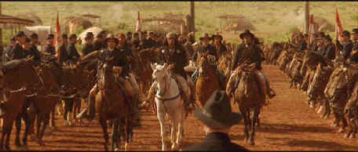

Columbia/1993/115m/ANA 2.35, PS 1.33
Hill assembled a terrific team in mounting this production. The visual achievements are outstanding. Lloyd Ahern Jr.’s command of the camera is majestic. Period detail appeared to be the result of thorough research. Ry Cooder’s score captures the power of the visual majesty, the force of the cavalry, and the mysticism of the Indians.
 |
Geronimo surrenders to General Crook ©Columbia |
The script does not
give the actor’s much chance of competing with the grandeur of the setting. Robert
Duvall provides some interesting support in the role of Chief Scout Al Sieber, but Gene
Hackman is surprisingly flat playing General George Crook. Wes Studi, so fine in Last of
the Mohicans, just cannot handle this amount of screen time. He never generates the
mystery or ferocity that Geronimo must exhibit to make this flick a go. Along with Studi,
Jason Patric fails to carry the picture on his shoulders. Patric brings his typically
moody presence to the role of Lt. Charles Gatewood, but Duvall is the only one with enough
flare to shine through the Western dust. Matt Damon narrates and plays the innocent young
officer learning all about the being a cavalry soldier and a man. His eyes stand in for
ours.
The expansive vistas of Monument Valley are a prime source to
show off beautiful cinematography and DVD is a prime tool for bringing those images to
home theater. Geronimo makes an exquisite DVD presentation, subtly replicating the colors
of the Southwest, capturing them in all their delicacy and power. With various lighting
schemes, the outdoor scenes are consistently magnificent on this DVD. Film grain in the
long lens shots is kept fine and tightly controlled. Images are sharp without ringing. The
scraggly face of Robert Duval playing scout Al Sieber is a road map in fine detail, each
pore and stubble of beard distinct. Accompanying the perfection of the images is an
intelligent 5:1 Dolby Digital recording. The wind swirls in the surrounds, creating a
sense of desert dust on the back of your neck. The mystic mood of Indian musical rhythms
plays beautifully with an open and airy sound, just like the land of its origins. The
sudden rapport of a rifle hangs in the air momentarily.